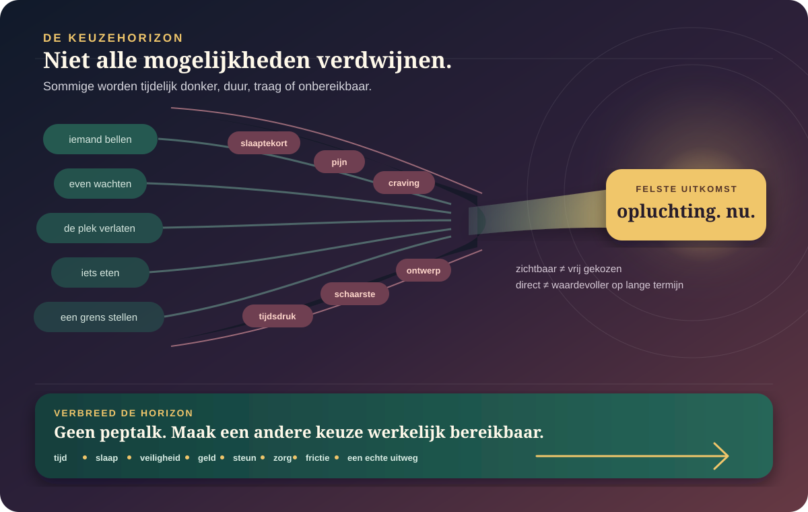

De kern in gewone taal
Onder druk verdwijnt keuze niet altijd. Ze kan wel smaller, duurder en ongelijker worden.
Slaaptekort, pijn, craving, tijdsdruk, dreiging en geldgebrek kunnen veranderen wat opvalt, hoe snel een uitkomst telt en hoeveel moeite een alternatief vraagt. Dat maakt gedrag begrijpelijker, maar niet volledig voorspelbaar. Vrijheid is hier geen aan-uitknop: ze hangt ook af van welke mogelijkheden werkelijk bereikbaar zijn.
De felste optie kan aandacht opeisen zonder de enige mogelijke actie te zijn.
Wat later belangrijk is, kan onder pijn, onzekerheid of ontwenning tijdelijk minder gewicht krijgen.
“Kies anders” betekent weinig wanneer rust, geld, veiligheid, zorg of steun ontbreken.
Druk werkt vaak als een schijnwerper: één uitkomst wordt fel, de rest donker.
Met keuzehorizon bedoelen we het geheel van opties dat iemand op een bepaald moment kan zien, waarderen én uitvoeren. Sommige druk vernauwt vooral aandacht. Andere druk verandert het lichaam, de prijs van wachten of de werkelijke keuzeruimte. Die processen lijken op elkaar vanbinnen, maar vragen niet dezelfde oplossing.

Welke opties komen nog in beeld?
Aandacht kan blijven hangen bij dreiging, een cue of onmiddellijke opluchting.
Welke uitkomst voelt nu zwaar?
Pijn, onzekerheid en tijd kunnen het gewicht van winst, verlies en wachten verschuiven.
Welke optie is uitvoerbaar?
Een keuze is niet reëel omdat ze grammaticaal bestaat. Toegang, macht en middelen bepalen mee.
Slaaptekort en pijn kunnen het landschap veranderen — maar niet bij iedereen op dezelfde manier.
Feedback krijgt een ander gewicht
Na een week met vijf uur tijd in bed waren 36 volwassenen gevoeliger voor beloningsfeedback en minder consistent in een omkeertaak. De nauwkeurigheid als geheel veranderde niet.
Drie uur slaap is niet hetzelfde als hersteld zijn
Na totale slaapdeprivatie bleven bij 40 deelnemers fouten en trage informatieopbouw na drie uur herstelslaap verhoogd; na acht uur waren de gemeten parameters hersteld.
“Moe maakt roekeloos” is te simpel
Een review vond zowel riskantere als voorzichtigere keuzes. Taak, winst-verlieskader, duur en persoon veranderen de uitkomst.
Opluchting krijgt onmiddellijke waarde
Experimentele pijn kan aandacht en waardering verschuiven. Dat maakt een korte route begrijpelijk, maar rechtvaardigt geen conclusie over iemands karakter of alle chronische pijn.
Vertaling naar het dagelijks leven: laboratoriumtaken meten een afgebakend onderdeel van kiezen. Ze voorspellen niet rechtstreeks hoe één persoon beslist over werk, relaties, geld, medicatie of middelengebruik.
Een voorkeur voor “nu” is niet automatisch irrationeel.
In uitstelkeuzetaken daalt de subjectieve waarde van een beloning vaak met de wachttijd. Maar wachten bevat ook echt risico: komt de belofte er nog, blijft de situatie stabiel, heb ik dan nog toegang? In een studie met 370 deelnemers hing meer ervaren zekerheid van de latere beloning samen met minder sterke voorkeur voor het onmiddellijke. Alleen “100% zeker” in de instructie zetten veranderde de keuzes niet aantoonbaar.
De opbrengst of opluchting is concreet en de actie ligt klaar.
De toekomst vraagt vertrouwen, continuïteit en een route om er te geraken.
Soms is “ongeduld” een kortetermijnfout. Soms is het een aanpassing aan een toekomst die te vaak niet leverde.
Schaarste kan mentale ruimte kosten. Maar het eerste probleem blijft: er is te weinig.
Een meta-analyse uit 2024 bundelde 256 effectgroottes uit 29 datasets met 111.852 mensen. Financiële schaarste hing gemiddeld samen met lagere cognitieve prestaties; na rekening houden met onderwijs werd het partiële verband klein. Ontwerp, ernst, levensfase en causaliteit verschillen. De correcte conclusie is dus niet “armoede maakt dom”, maar dat structurele tekorten én samenhangende omstandigheden prestaties en mogelijkheden kunnen belasten.
Het schaarstekader ziet iets belangrijks
Onbetaalde rekeningen, tijdgebrek en onzekerheid blijven aandacht vragen en maken sommige fouten duurder.
Het kader kan ook schade doen
Wanneer elk gevolg een “scarcity mindset” heet, verdwijnen lage lonen, discriminatie, zorgkosten en gebrek aan opvang uit beeld.
In twee experimenten werden mensen met dezelfde tijdsdruk of storende ruis geduldiger wanneer ze wisten dat ze de druk konden verlichten — zelfs als bijna niemand die optie gebruikte. Interessant, maar nog geen bewijs dat een gevoel van controle structurele schaarste oplost.
Een keuze kan formeel vrij zijn en praktisch gestuurd.
Wat gebeurt er als je niets doet?
Een vooraf aangevinkte optie, automatische verlenging of default bepaalt welke keuze geen extra handeling vraagt.
Frictie verdeelt gedragWat komt eerst en vaak?
Rangschikking, herhaling en aanbevelingen beïnvloeden wat beschikbaar en normaal lijkt.
Zichtbaarheid is machtWanneer verschijnt het aanbod?
Een cue op een kwetsbaar moment kan anders werken dan dezelfde boodschap wanneer iemand uitgerust en veilig is.
Context verandert responsHoe moeilijk is stoppen?
Een aankoop in één tik en annuleren via zes schermen laten dezelfde twee opties niet even bereikbaar.
Symmetrie is toetsbaarDit betekent niet dat ontwerp mensen als marionetten bestuurt. Wel dat verantwoordelijkheid niet alleen bij de klik hoort, maar ook bij wie de klikomgeving bouwt.
Open het dossier Aandacht over selectie en aandachtseconomie →
Wilskracht lijkt geen simpele tank die na een paar keuzes leegloopt.
De klassieke ego-depletiontheorie stelde dat eerdere zelfcontrole een beperkte hulpbron verbruikt. In een preregistreerd project met 36 laboratoria en 3.531 deelnemers was het bevestigende effect klein en niet significant (d = 0,06); de Bayesiaanse analyse vond de data vier keer waarschijnlijker onder de nulhypothese dan onder het vooraf gespecificeerde alternatief. Exploratieve analyses lieten hoogstens een zeer klein en onzeker effect zien.
Belangrijk onderscheid: dat de tankmetafoor zwak staat, betekent niet dat mensen nooit moe worden of slechter presteren. Het betekent dat één universeel leeglopend mechanisme de bevindingen niet goed vangt.
Keuze wordt helderder wanneer we niet meteen één kamp kiezen.
Begrensde rationaliteit
Herbert Simon
Brengt: mensen optimaliseren niet met alle informatie; ze zoeken vaak een oplossing die goed genoeg is binnen tijd en grenzen.
Grens: “begrensd” zegt nog niet welke macht of welk lichaam de grens maakt.
Beslissen onder risico
Daniel Kahneman & Amos Tversky
Brengen: keuzes hangen af van referentiepunten, verlies en framing. Veel prospect-theorypatronen zijn internationaal gerepliceerd.
Grens: een taakpatroon is geen compleet mensbeeld en “bias” is niet altijd een fout.
Schaarste
Sendhil Mullainathan & Eldar Shafir
Brengen: tekorten kunnen aandacht tunnelen naar het urgente.
Grens: effecten zijn heterogeen; hun taal mag materiële oorzaken nooit vervangen door een tekort in het hoofd.
Agency zonder schuld
Hanna Pickard
Brengt: handelingsruimte serieus nemen zonder schaamte of vijandigheid als behandeling te gebruiken.
Grens: verantwoordelijkheid moet meegroeien met werkelijke capaciteit, veiligheid en alternatieven.
Doelgericht kiezen bij verslaving
Lee Hogarth
Brengt: gedrag kan doelgericht blijven terwijl negatieve stemming de onmiddellijke waarde van gebruik verhoogt.
Grens: laboratoriumkeuze vangt lichamelijke afhankelijkheid, geschiedenis en markt niet volledig.
De tegenvraag
De persoon zelf
Brengt: kennis van wat een optie werkelijk kost, beschermt of onmogelijk maakt.
Grens: ervaring is onmisbaar maar geen universeel mechanisme; ook zelfverklaringen kunnen later verschuiven.
Vraag niet alleen “waarom koos ik dit?” Vraag ook “wat was er toen nog bereikbaar?”
- 1Benoem wat fel werd
Welke onmiddellijke uitkomst trok: opluchting, veiligheid, erbij horen, verdoving, snelheid of conflict vermijden?
- 2Zoek wat donker werd
Welke waarde of optie kende je wel, maar kon je op dat moment moeilijk voelen, vertrouwen of uitvoeren?
- 3Verlaag één drukfactor
Niet “sterker worden”, maar bijvoorbeeld slaap, afstand, eten, tijd, een persoon, geld, medicatie of een duidelijke stopknop organiseren.
- 4Maak het alternatief concreet
Wie doet wat, wanneer en met welke middelen? Een echte route heeft minder stappen dan een goede bedoeling.
Dat bewaart handelingsruimte zonder te doen alsof iedereen vanuit dezelfde startpositie kiest.
Recente studies maken het beeld preciezer — niet eenvoudiger.
De nieuwste studies meten kleine, afgebakende processen. Ze zijn nuttig zolang we hun taak niet verwarren met een heel leven.
Korte herstelslaap liet enkele fouten bestaan.
Na 40 uur wakker zijn herstelde drie uur slaap de reactietijd, maar niet alle inhibitie- en accumulatiematen; na acht uur waren alle gemeten parameters hersteld.
Lees de primaire studie →Een week korte nachten maakte beloning sterker en keuze grilliger.
Vijf uur tijd in bed verhoogde beloningsgevoeligheid en keuzevariatie in één omkeertaak, zonder verschil in totale nauwkeurigheid.
Lees de primaire studie →Acute stress maakte gedrag niet algemeen gewoonteachtiger.
Twee experimenten vonden geen toename in gewoontekracht voor beloning of verliesvermijding — ook niet wanneer cortisolreactie werd meegenomen.
Lees de primaire studie →Ervaren zekerheid hing samen met minder sterke voorkeur voor nu.
Maar expliciet “100% zeker” toevoegen veranderde de uitstelkeuze niet aantoonbaar. Vertrouwen is meer dan één zin in een instructie.
Lees de primaire studie →Grens van dit dossier
Begrijpen waarom een keuze vernauwde, is geen vrijbrief voor schade.
Context en druk kunnen verantwoordelijkheid nuanceren zonder gevolgen ongedaan te maken. Bij geweld, dwang, acuut gevaar, ernstige ontwenning of suïcidaliteit hoort veiligheid vóór analyse. Zoek professionele of dringende hulp; bel in België en de EU 112 bij onmiddellijk gevaar.
Gebruik dit kader niet om iemand anders te diagnosticeren of diens “echte motief” in te vullen. Een horizon kan smal zijn door stress, maar ook door controle, dreiging of feitelijk gebrek aan alternatieven. Daar hoort soms bescherming, geld, beleid of medische zorg bij — geen beter denk trucje.
Waarop dit dossier steunt.
- Review · 2025Wei e.a. — Sleep deprivation and risky decision making
Onderbouwt dat slaaptekort niet eenduidig tot meer risico leidt.
- Primair slaaponderzoek · 2026Lim, Bennett & Drummond — Sleep restriction increases reward sensitivity
Cross-overstudie naar beloningsfeedback en omkeerleren na een week slaaprestrictie.
- Primair slaaponderzoek · 2026Schlitter e.a. — Short sleep recovery and decision-making
Nieuwe studie naar herstel na totale slaapdeprivatie.
- Preregistered stressonderzoek · 2025Zwosta e.a. — No general habit shift after acute stress
Tegenbewijs bij de algemene claim dat stress doelgerichte controle uitschakelt.
- Uitstelkeuze · 2025Downey e.a. — Perceived reward certainty in delay discounting
Verbindt ervaren zekerheid aan de waardering van latere uitkomsten, met een nulresultaat voor de instructiemanipulatie.
- Experimentele pijn · 2021Koppel e.a. — Pain, value and decision-making
Afgebakend experiment bij 90 mensen naar hoe pijn de verwerking van waarde kan beïnvloeden.
- Meta-analyse · 2024De Almeida e.a. — Financial scarcity and cognitive performance
256 effectgroottes; gemiddeld negatief verband, klein partieel effect na controle voor onderwijs en veel heterogeniteit.
- Agency-experimenten · 2020Gneezy, Imas & Jaroszewicz — Agency, time and risk preferences
Zelfde druk, andere mogelijkheid om ze te verlichten; agency veranderde latere keuzes.
- Multisite preregistratie · 2021Vohs e.a. — A paradigmatic test of ego depletion
36 laboratoria en 3.531 deelnemers; geen bevestigend bewijs voor een robuust depletioneffect.
- Multinationale replicatie · 2020Ruggeri e.a. — Replicating patterns of prospect theory
Reproductie van belangrijke risicopatronen bij 4.098 mensen in 19 landen, met variatie.
- Verslaving & doelgericht kiezen · 2020Hogarth — Addiction is driven by excessive goal-directed drug choice
Tegenstem bij een volledig gewoonte- of dwangmodel; negatieve stemming kan uitkomstwaarde verschuiven.
Lees ook het Atlas-kompas en ons bronnenbeleid.